Overview
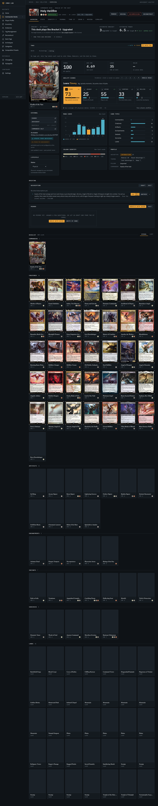
DV-1 · Real application, not mockups
Holy Hellfire · production read-only browser inspection. Twelve deck surfaces × two widths. Open full-page images to inspect lower sections. Non-read requests were blocked; the Primer draft failure is caused by that guard, not a verified service outage.

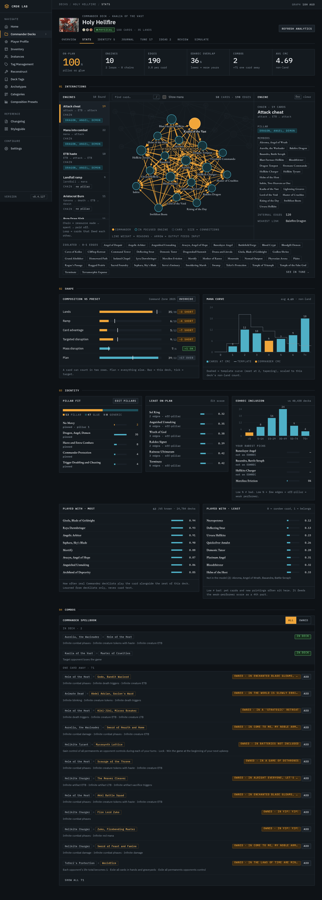
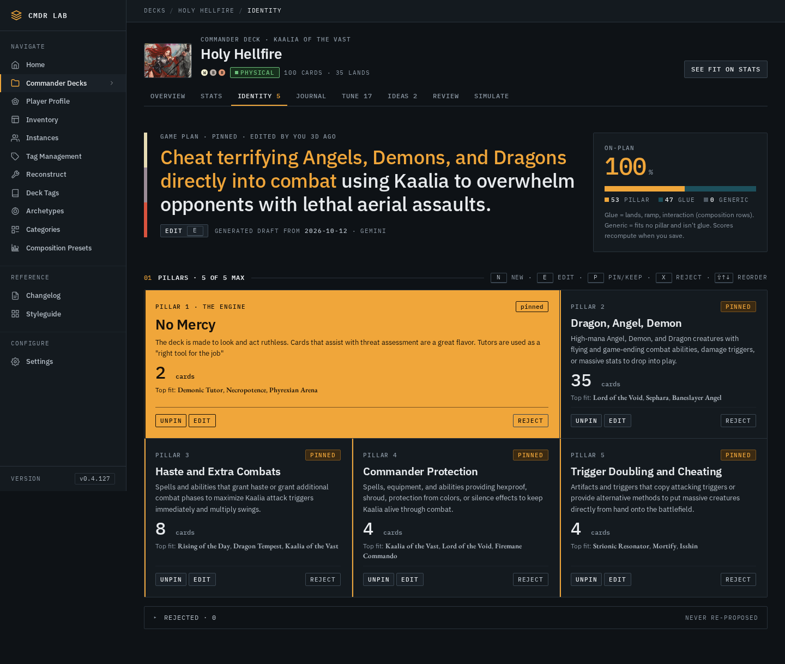
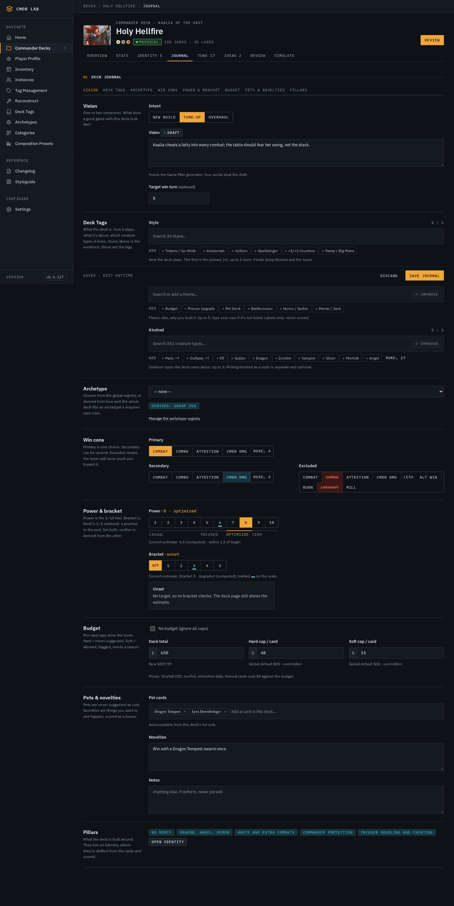
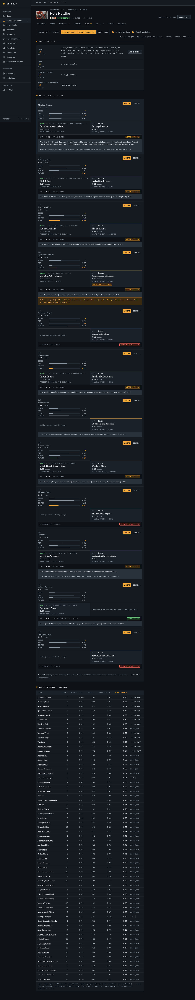
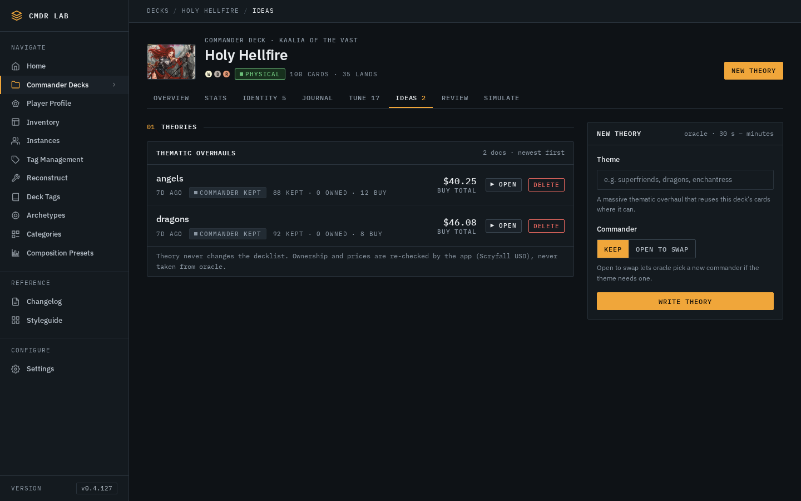
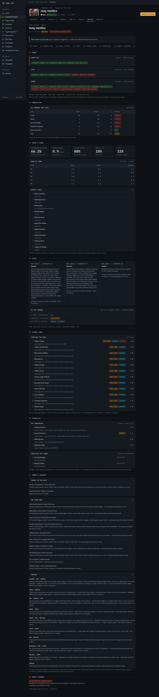
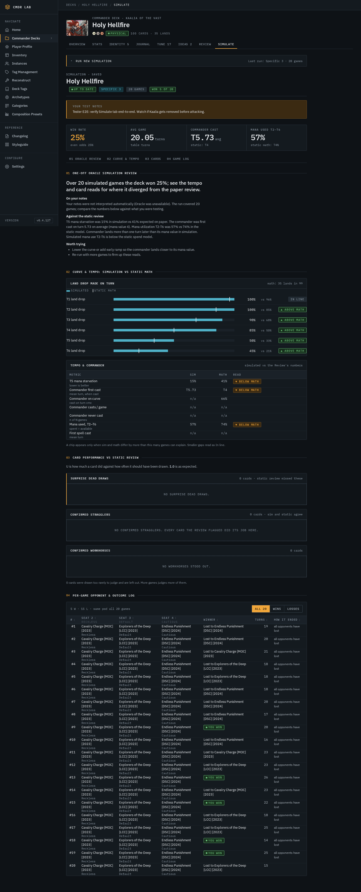
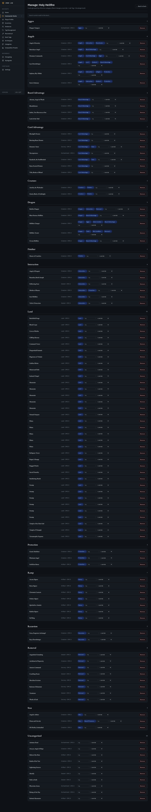
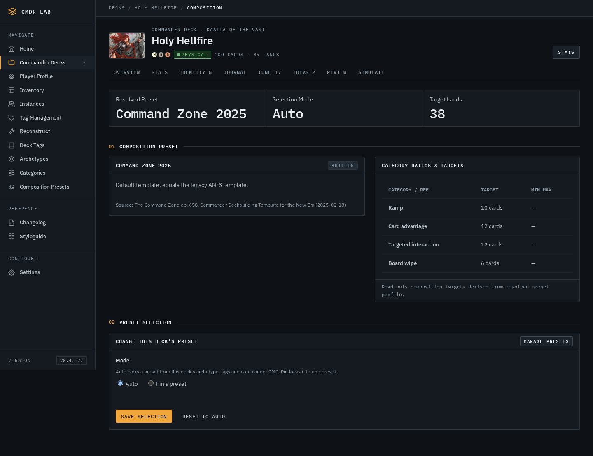
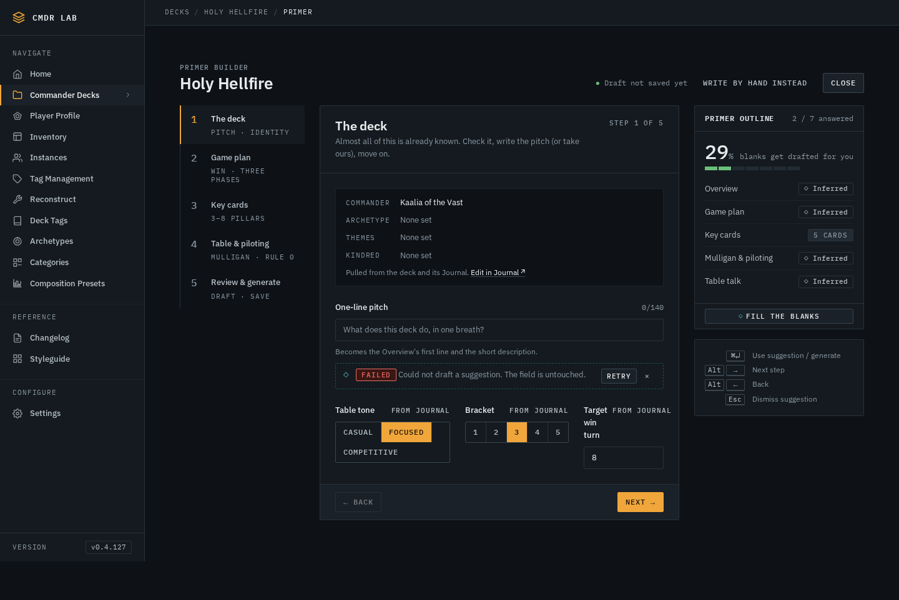
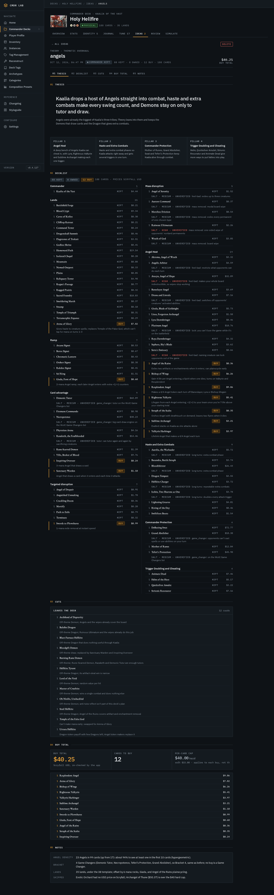